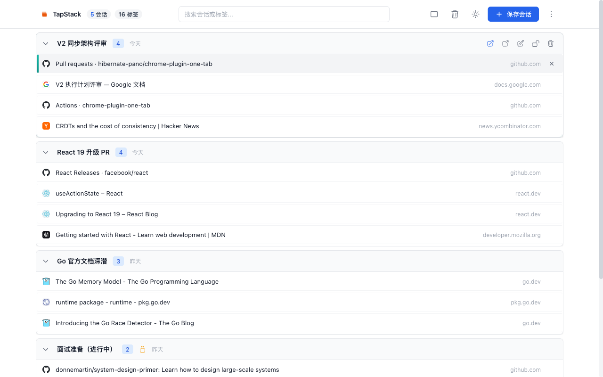
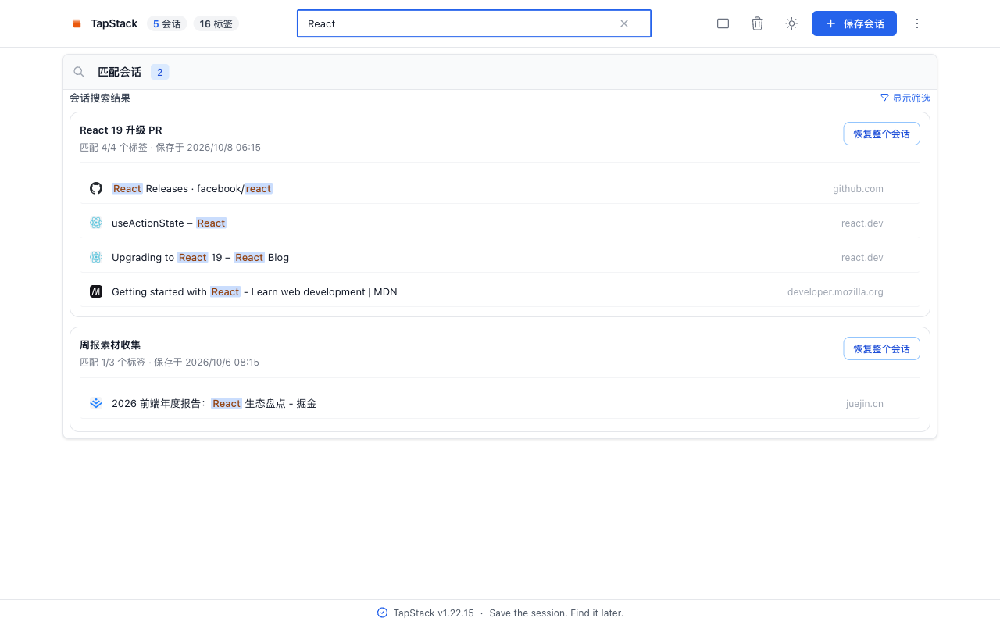
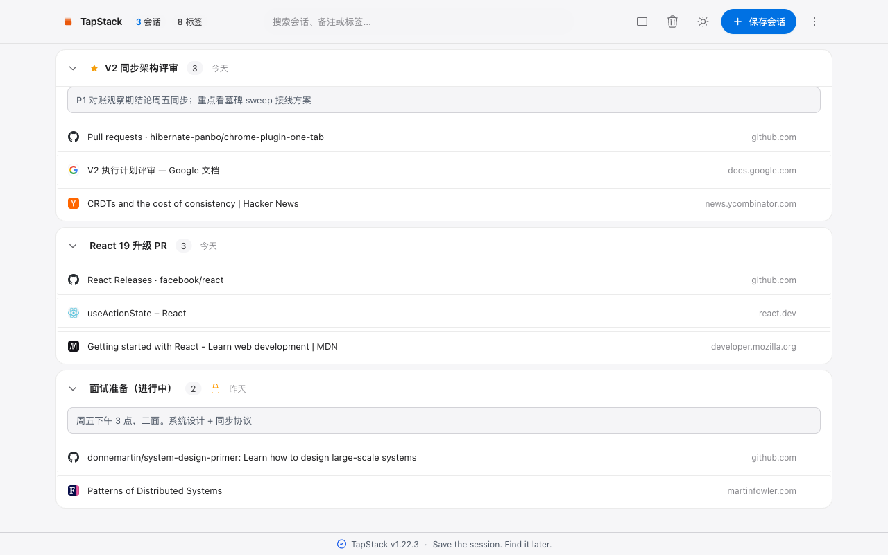
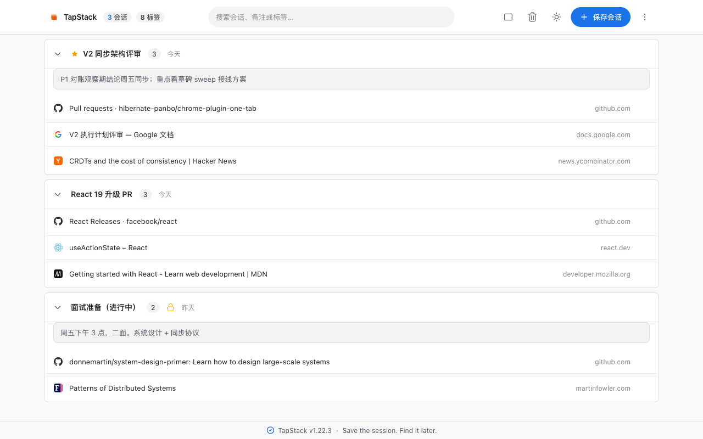
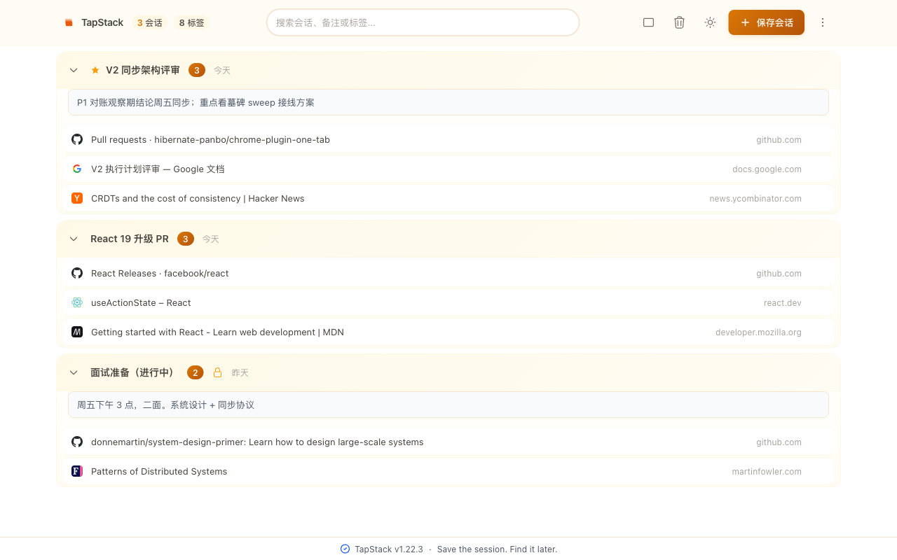
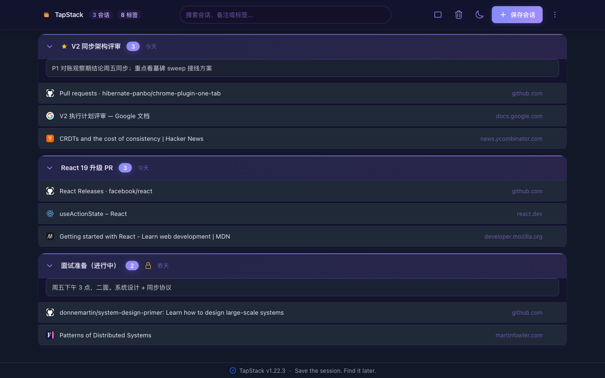
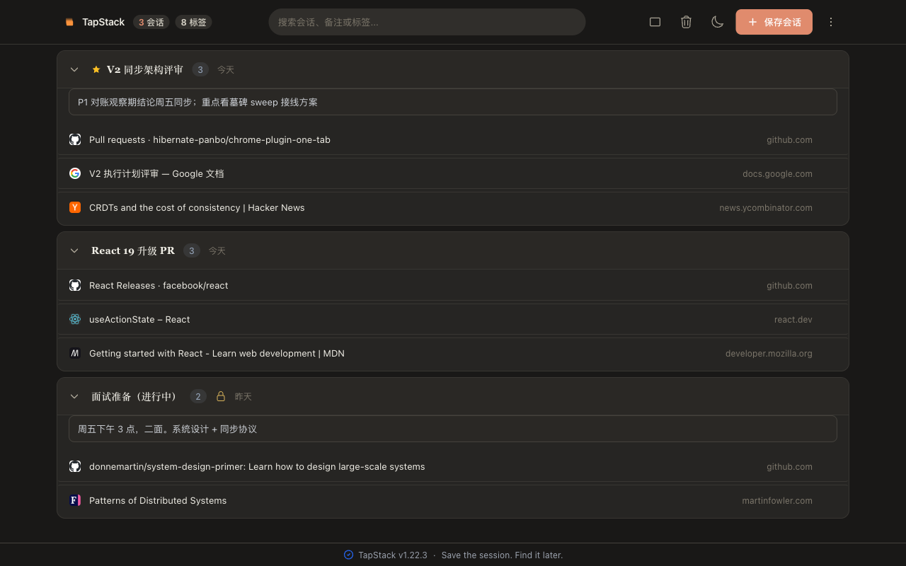
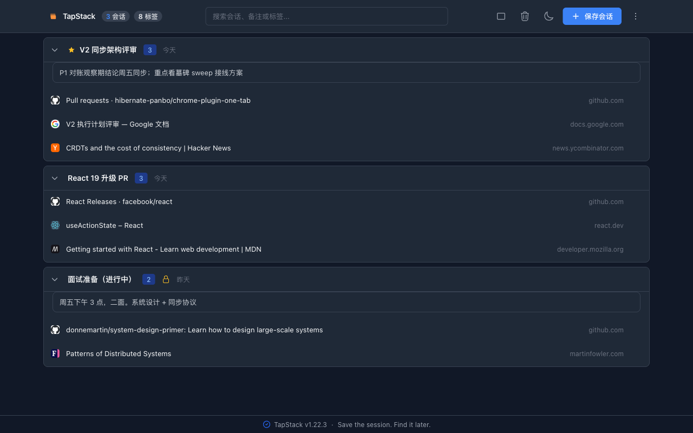

三字段全文检索
会话名、标签标题、网址都能搜，七档权重排序，固定标签加权。搜索结果按会话归组后展开命中标签，可以只恢复其中一条。
Save the session · Find it later · Restore it
一个窗口同时开着文档、PR、Issue、控制台、监控、后台。 TapStack 把它们整组保存成一个命名会话，标签随之关闭， 窗口还给你。下次需要时，按名字、标题或网址搜到它， 一键在新窗口里整组展开继续干。
免费 · MIT 开源 · 无需注册即可使用本地功能
它只做一件事，但做到底
目标是帮你把当前窗口保存成可找回、可恢复的工作现场。 保存、找回、恢复 —— 三个动作构成完整闭环，不掺别的。
01 / SAVE
点扩展图标、按页面顶栏的按钮、用快捷键或右键菜单，四条入口走同一条保存链路。保存后当前窗口的标签随之关闭，屏幕立刻干净。
02 / FIND
会话名、标签标题、网址三个字段全文检索，七档权重排序，命中词高亮。再加域名、固定标签、保存时间筛选。上千个会话里也能翻出三周前那一屏。
03 / RESTORE
一键在新窗口恢复整个会话；也可以就地打开到当前窗口。未锁定的会话恢复后从列表移除（标签已在浏览器里，无需再清理；这一步不可恢复，没有回收站也没有撤销）；锁定的会话保留着，可以反复用。
真实界面
不是概念图，是当前版本的实际界面截图。


功能细节
会话名、标签标题、网址都能搜，七档权重排序，固定标签加权。搜索结果按会话归组后展开命中标签，可以只恢复其中一条。
锁定的会话恢复后不会从列表里消失，也不会被清理重复标签误伤；会话内不能重命名、不能逐条删除、也不能把标签拖到别的会话，但整张卡仍然可以删除（删前会多问一次）。它是「收藏夹」与「剪切」之间的分界线。
同一个网址在多个会话里反复出现时，一键清理：每组保留最近一次打开的那一条，清完顺带收走空会话。锁定的会话自动豁免。
OneTab 文本格式双向互通，外加 JSON 全量备份导出。导入后会告诉你「文件内共 N 个、成功 X 个、跳过 Y 个」——不报假的成功。
会话内标签可拖拽排序（跨会话、组内都行），也支持键盘重排：上下键移动、Home/End 到首尾。折叠展开、相对时间（今天/昨天/N 天前）帮你找到位置。
不打开管理界面也能保存：右键「保存当前标签」「保存其他标签」。Ctrl+Shift+S 保存整窗并关闭，Alt+Shift+S 存全部，Alt+S 存当前页。
6 套主题 · 明暗两态
每套主题都有独立的浅色与深色两套配色，不是简单反转。 圆角、质感、强调色随主题整体变化——从 Apple 原生到 Anthropic 暖调。






另有单栏 / 双栏布局切换、明 / 暗 / 跟随系统三档 darkMode compact 12 palettes
数据去哪，你选
默认不强制你注册。不登录，数据只留在浏览器本地。 要跨设备找回时，有两条路可选——云端的或你自己的。
默认路径
登录后同步到托管服务，换设备、换浏览器都能找回工作现场。本地改动自动防抖上传，登录时自动合并下载。
自带存储
数据同步到你自己的云盘（坚果云、自建 Nextcloud 等），不经过我们的服务器。离开浏览器前用你的口令加密。
PBKDF2-SHA256 250k 迭代派生密钥 + AES-256-GCM我们不承诺的东西
如果只看一节，请你看这节。下面是这个扩展现在做不到的事—— 写在这里，好让你带着准确的预期安装。
早期文档曾把 TapStack 称作「工作会话保险箱」。现已去掉「保险箱」—— 保险箱的心理契约是「东西丢了能找回来」，而本产品删除即物理清除、无回收站、不可恢复。 定位词与实际行为必须一致，否则用户会带着「存进来应该安全」的预期点删除，然后真的丢数据。
—— TapStack README，关于命名
没有回收站：删掉的会话找不回来，删除这一步也没有退路。删除前会二次确认，「删除所有会话」强制确认并显示数量——但确认之后就是真的没了。恢复整个会话、或点开单条标签那一步同样没有退路：记录会从列表里移除，移除之后找不回来（本产品不做回收站，也不做撤销）。唯一的退路是事先锁定那个会话——锁定的会话恢复后仍留在列表里，可以反复用。
云端存的是密文，但密钥由账号 ID 派生，而账号 ID 是公开标识、且与密文存在同一张表。准确的说法是「传输加密 + 服务端静态加密」。要真正的 E2E，需要口令派生密钥加一套恢复码机制——那是一次独立的大改。在那之前，请不要把云端数据当作「只有你能看见」。
两台设备同时编辑同一个会话时，胜负由操作印记（序号 + 设备编号）决定，不是按「谁保存得晚」—— 两边的序号来自各自独立的计数器，先保存的那台也可能赢。赢的一方整组覆盖另一方，败方新增的标签会丢失，且没有任何提示。错峰使用不受影响。自动同步默认关闭，要开的话有 5 / 10 / 30 / 60 分钟四档可选。
选自带存储（WebDAV）时，会话内容用你的口令加密，但目录清单是明文的——云盘服务商能看到「有多少个会话、各自何时改过」。不含名称与网址。选「不加密」则名称与网址也会可见。
上传到云端的，只有你主动保存过的那些标签页——也就是会话数据本身。不自动收集浏览历史，不收集任何分析数据，不出售给第三方。
OneTab 文本格式本身不含 favicon 和固定标签状态，所以导入后这两栏是空的。其余内容双向互通有往返测试兜底，不会截断或丢失。
已经在用 OneTab？直接导入它的文本格式，一条条会话原样进来； 想走也能原样导出，不锁人。格式解析有专门的往返测试兜底—— 标题里带竖线、网址是本地文件的，都不会被截断或丢弃。
可验证的部分
统计口径：tests/ 目录 it() 用例计数与 src/ 代码行数，含 29 个 Playwright 端到端脚本（跑真实浏览器与真实云端）。
为谁做的
文档、PR、Issue、控制台、监控、后台同时开很多页，切回去再切回来是一整片上下文。
论文、论坛、竞品、视频、资料长时间并行打开，需要一个可以把它们整体收起来再整体取回的地方。
选题、草稿、引用、素材、后台需要反复切换，一屏的参考不该被关掉之后再一块块翻回来。
CRM、表格、邮件、公司页、Notion 长时间保持上下文，跟进多个对象时各自一摞。